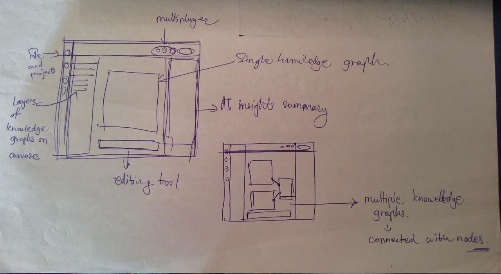
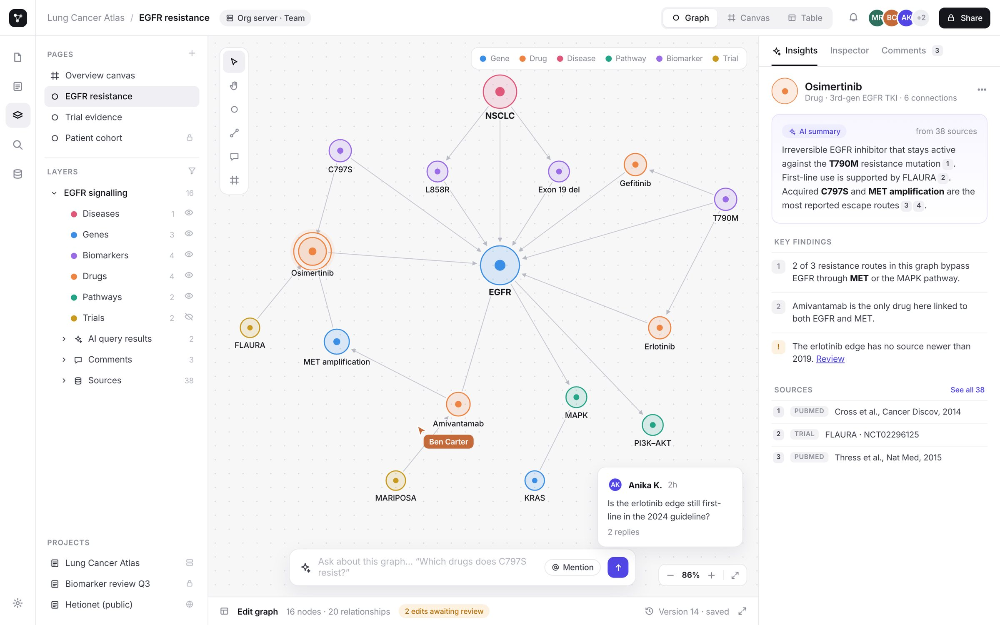
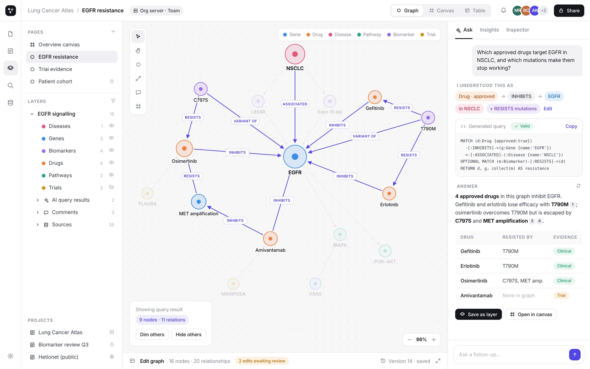
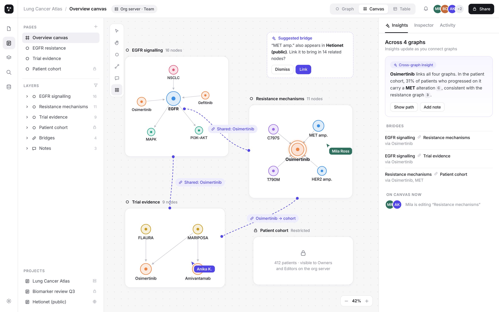
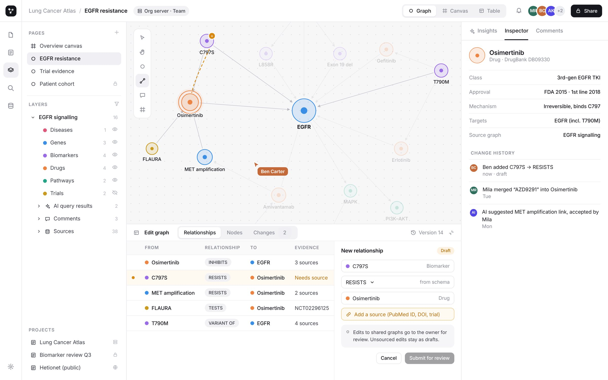
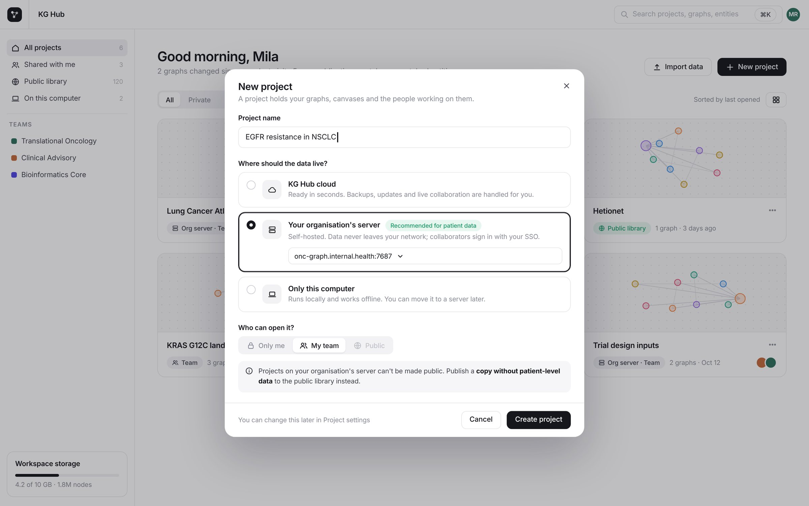
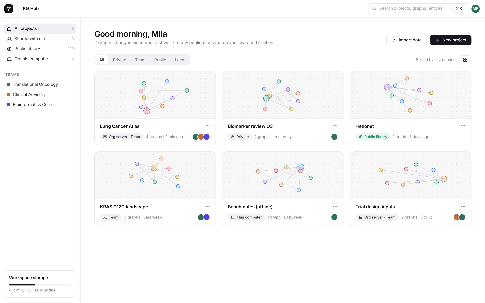
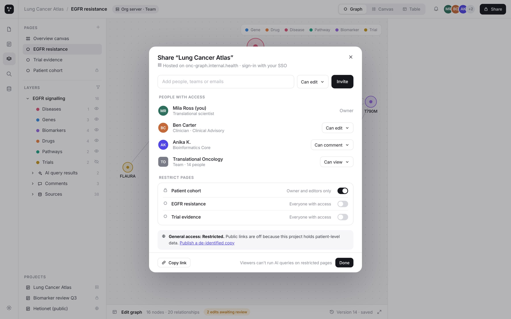

KG Hub — making biomedical knowledge graphs usable
What is KG Hub?
A workspace where translational scientists and clinicians build, question and share biomedical knowledge graphs: networks that connect genes, drugs, diseases, pathways, biomarkers and clinical trials.
The challenge
Make a tool that holds millions of connected facts feel simple enough for a clinician between patients, and powerful enough for a scientist building a hypothesis.
My role
Product designer: research synthesis, competitor validation, IA, interaction & UI
Users
Translational scientists, clinicians
Platform
Web app, desktop first
Domain
Drug discovery, oncology (lung cancer)
This project is under NDA. The client, internal datasets and production screens are not shown. Every screen here is recreated with public biomedical knowledge (EGFR-driven lung cancer), people are research personas, and "KG Hub" is a working title.
02Problem
The knowledge exists. Getting to it doesn't work.
Knowledge graphs already link what researchers need: which drug targets which gene, which mutation causes resistance, which trial tested it. But today they're built for data engineers, not for the people who make the decisions.
Scattered across toolsOur personas move between PubMed, Open Targets and Hetionet to answer one question, and still miss the full picture.
Locked behind a query languageAsking a graph means writing Cypher or SPARQL. Most clinicians never will.
Too much to look atLoad a real graph and you get a "hairball": thousands of crossing lines no one can read.
Hard to trust, hard to shareScientists need the source behind every link, and patient data can't leave the institution.
How might we let researchers and clinicians ask questions of huge biomedical graphs in their own words, without losing trust, control or their train of thought?
03Research
Understanding drug discovery before designing for it
We started from the domain: how drugs move from target discovery to preclinical testing to the clinic, and where data breaks along the way. All of it was mapped on a shared research board.
Bridges the lab and the clinic: turns preclinical findings into biomarker strategies and early-phase trials.
Needs
Turn large, mixed datasets into clear hypotheses
Prioritise targets with real clinical relevance
Bring clinicians into the work early
Frustrations
No integrated, interactive way to visualise the data
Unstructured data she has to clean by hand
BC
Ben Carter
Clinician & medical advisor · 10+ years in trials
Gives the clinical perspective on early programs: is this target relevant, is this patient group right, is it safe?
Needs
Fast, evidence-backed answers between clinical duties
See preclinical gaps before trial design
Explain clinical insight to non-clinical teams
Frustrations
Information overload, hard to interpret
Can't tell how strong the evidence behind a claim is
What kept coming up
We clustered pain points from both journeys and voted as a team on which ones the product should own first.
Disparate data sources and a massive volume of dataBoth
Hard to turn large datasets into clear hypothesesScientist
Information overload, limited interpretabilityClinician
Poor visibility into the evidence level behind findingsBoth
No holistic view of gene–drug–disease–pathway linksBoth
Biomedical knowledge moves faster than anyone can readBoth
~10 in 10,000
compounds found in discovery make it to development. Every bad target caught early saves years.
The feature list we voted in
AI query and chat over the graph
Citations for every outcome
Insight highlighting and summaries
Collaboration on a session
Saved searches and sessions
04Validation
Six feature ideas, checked against the market
From the research we shortlisted six features. Before designing, I checked how graph and research tools handle each today, what they leave out, and whether to keep the idea as it was or refine it.
Feature
What others do
Our call
Projects: private, public or local
Kumu sets privacy and contributors per project. Neo4j splits cloud (Aura) from self-managed and local (Desktop), often for data-sovereignty rules. Hosting is a product you pick before you start.
Refine Choose where the data lives and who sees it together, per project. Rules stop mistakes, e.g. server-hosted patient data can't go public.
Neo4j Explore keeps a perspective drawer, a legend panel and an inspector around the scene. Properties, AI and editing end up fighting for the same space.
Keep Give each job one fixed home. Editing stays collapsed until it's needed.
Simple UI for huge data
Cambridge Intelligence: don't expose hairballs, group and filter instead. A 2020 study found cognitive load rose with graph complexity, then fell as people gave up.
Keep Made it a principle: show less, dim instead of delete, colour only for meaning.
05Principles
Five rules for every screen
Research and validation pointed to the same thing: the interface has to stay calm so the data can be loud.
Questions, not queriesAnyone can ask in their own words. The query is there for those who want it.
Show the workEvery AI answer and every edge leads back to a source.
Less on screenDim, group and collapse before showing everything.
Data has a homeWhere data lives and who sees it is clear on every screen.
Science is a team sportLive presence, comments and reviewed edits, not emailed exports.
Gene
Drug
Disease
Pathway
Biomarker
Trial
AI (and only AI)
06Key decisions
From sketch to system
I started with paper sketches of the workspace and the canvas, then grew them into the information architecture below.

Concept sketches: one graph, then many graphs connected on a canvas.

The same structure in the final workspace.
Information architecture
Project
Where it lives, who can open it
HostingCloud · org server · this computer
VisibilityOnly me · team · public
People & roles
Pages
One question per page
Graph pageOne graph, explored deeply
Canvas pageMany graphs, connected
Restricted pagee.g. patient cohort
Layers
What you can show or hide
Entity typesGenes, drugs, diseases…
AI query results
Comments · sources
Around the canvas
Fixed homes for each job
Insights · InspectorRight panel
AskPrompt bar + right panel
Edit graphBottom drawer
Decision 01
Give every job a fixed home
123456
Left: where you are. Projects, pages and layers, with an eye toggle per entity type.
Centre: the graph. Only entity types get colour; the chrome stays grey.
Ask bar. A plain-language question about what's on screen.
Right: what you're looking at. AI summary, findings and sources for the selection.
Bottom: change it. The edit drawer stays collapsed until you need it.
Top: who's here. Live collaborators, hosting status and sharing.
Why
The research showed two modes, reading and changing. Clinicians mostly read, scientists switch between both. Separating them keeps the reading view quiet.
Trade-off
Three panels take space from the graph. Every panel collapses, and the canvas recentres when they do.
Decision 02
Ask in plain language, and see what the AI understood
Mila asks: "Which approved drugs target EGFR in NSCLC, and which mutations make them stop working?" Before the answer, KG Hub shows how it read the question, as chips she can edit.
Why
Generated queries can be wrong. A scientist won't act on an answer she can't check. Chips let a clinician check it, and the validated Cypher lets a bioinformatician copy it.
Trade-off
More on screen than a chatbot answer. The query is collapsed by default for people with view access.
Detail
The answer becomes a layer on the graph, and everything outside it is dimmed, not removed, so context is never lost.

Decision 03
A canvas for many graphs, connected by what they share
Each graph sits on the canvas as a frame. When two graphs contain the same entity, such as osimertinib, KG Hub draws a bridge between them and the insights panel reasons across all of them.
Why
Real questions span graphs: signalling, resistance, trials and patients. Merging everything into one graph gives a hairball; separate tabs lose the links.
Trade-off
Frames show a summary, not every node. Double-click opens the full graph page.
Detail
AI suggests bridges to public graphs, but only links them on a click. Restricted graphs show as locked frames.

Decision 04
Editing that keeps the evidence
The bottom drawer turns the graph into a table you can edit, next to a form for new relationships. Relationship types come from the schema, so nobody types "inhibits" three different ways.
Why
"Citations for every outcome" was a top-voted need. A shared graph is only trustworthy if every edge has a source.
Trade-off
A required source slows quick edits. Unsourced edits are saved as private drafts instead of being blocked.
Detail
Edits to shared graphs go to the owner for review, and every change, including AI suggestions, shows in the history.

Decision 05
Decide where data lives at the start, and keep it visible
A new project asks two things together: where the data lives (cloud, your organisation's server, or this computer) and who can open it.
Why
Competitors treat hosting as a separate product. For patient data it's the first question compliance asks, so it belongs at creation.
Trade-off
One more step before a project exists. A recommended default and plain-language consequences keep it fast.
Detail
Hosting and visibility show as a badge on every project card and in the top bar.


Decision 06
Multiplayer with restrictions
Roles anyone who has used Figma will recognise: owner, can edit, can comment, can view. On top of them, individual pages can be restricted.
Why
A clinician and a scientist need to work in the same graph, but a patient cohort can't be visible to every collaborator.
Trade-off
Page restrictions add one concept. They live in the share dialog, where people already look for access.
Detail
Public links are switched off for projects with patient-level data. Instead, KG Hub offers to publish a de-identified copy.

07Final flow
One question, start to finish
Mila investigates why patients stop responding to EGFR drugs, and brings Ben in. Click any screen to open it full size.
Create a project on the hospital's server, shared with her team.
Explore the EGFR graph; AI summarises the selected drug with sources.
Ask which drugs stop working and why. Save the answer as a layer.
Map it next to trials and the patient cohort on the canvas.
Edit: Ben adds a resistance link; it waits for a source and review.
Share with the wider team, keeping the patient page restricted.
08Reflection
Designing AI for experts means showing the work
The hardest part wasn't the graph. It was deciding what not to show, and making every AI answer something a scientist would be willing to defend in a meeting.
What I'd test next
First question without trainingCan a clinician get a correct, cited answer in under two minutes on first use?
Trust in AI answersCompare confidence ratings with and without the "understood as" chips and sources.
Canvas at scaleAt how many frames do bridges stop helping? Where does grouping need to kick in?
Watched entitiesResearch asked for alerts when new trials or papers touch a followed gene. That's the next feature to design.
Sources for the validation. Product documentation and research, accessed November 2026.